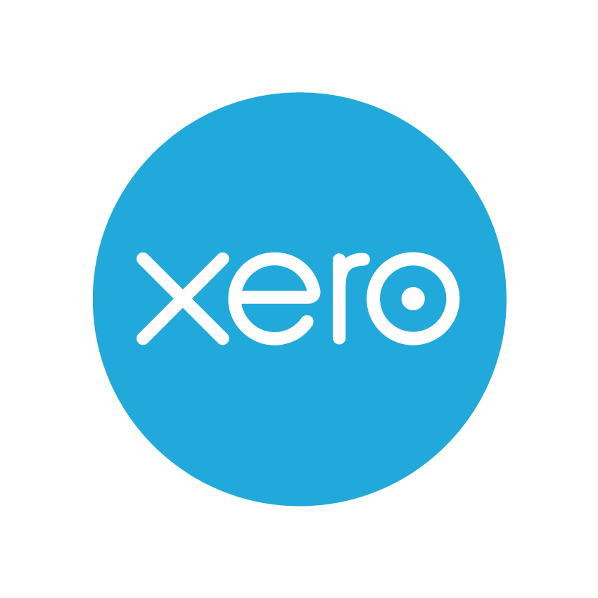

Accounting Innovations
3 Popular innovations
Why is it popular?
Who usually uses them?
QuickBooks
- Easy to use for small businesses
- Allow cooperation
- Recommened by many users
FreshBooks
- Simple to use
- Save more time
- More organize for patients

Xero
- Had instructions for people with no idea about accounting
- Good with time management
- Reduced data needed for backup
Computerized accounting was doing accouting on cloud and all imformations are stored in there. Manual accounting are on paper and having a hard copy. Both method are completely opposite and has it's own advantages and disadvantages.
Computerized accounting
Takes up less spaces
Can be backed up
Won’t be accessible without internet connection
May result in lost of datas
Manual accounting
Have a actual copy
Hard to make edit
Not efficient to organize and find what you need
Possible ideas
Computerized accounting is a good start, if there's one that can save a copy of the information and can be sent to another device for backup. Or just like Google that allows you to download the website for you to access it while offline. You can also delete it when you don't need it anymore or it can sync automatically or manually. The sofware can be used on a pc or phone and cilents can download both. Everyone carries their phone around, so we can have a downlaod function in the app that saves the data. You will be able to access the data even offline.